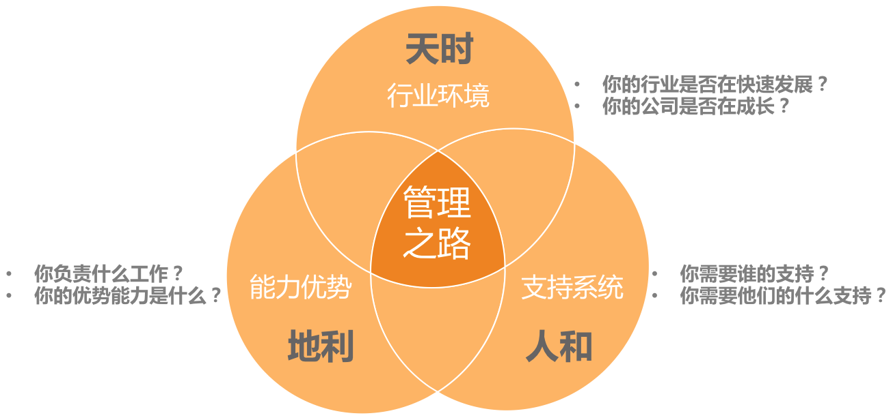

技术管理并没有放弃技术：
- 把技术提到更高视角来看待。把技术作为一个手段，看它为目标能带来什么。
- 换一种学习方式来掌握技术。建立团队学习机制；请教专家；共创知识
对于技术实现者来说，程序设计能力、编码实现能力、技术攻坚能力和技术评估能力，都是需要具备的，主要关心的是“怎么做”，属于“how”的范畴。而对于技术应用者来说，技术评估能力变得尤其重要，因为技术管理者主要关心的是“要不要做”“做什么”，属于“why”“what”的范畴，是在要综合评估之后，做出决策和决断的。所以，很多前辈都会告诉我们要保持“技术判断力”，而并没有要求我们保持编码能力，原因就在这里。
作为一个技术管理者，即技术应用者，要评估的维度主要是：
- 结果评估。即，你要回答“要不要做”，希望拿到什么结果，你要从哪几个维度去衡量结果，从哪几个技术指标去验收成果。
- 可行性评估。一是“能不能做”，二是“值不值得”。“值不值得”，就是成本收益问题。收益，往往是显而易见的；而成本，就有很多方面要考虑了，这正是体现技术判断力的地方。
- 风险评估，有哪些技术风险需要未雨绸缪，考虑该技术方案带来最大损失的可能性和边界，以及在什么情形下会发生。
技术维护成本：
- 技术造型成本
- 技术升级成本
- 问题排查成本
- 代码维护成本
管理风格，本质就是你和团队的协作方式，也就是你和团队的“位置关系”，即你站在团队的什么位置。
- 指令式管理：重事不重人，关注目标和结果，喜欢发号施令但不亲力亲为
- 支持式管理：重人不重事，希望带着冲锋亲力亲为，特别在意团队成员的感受，并替他们分担工作
- 教练式管理：重人也重事，关注全局和方向，并在做事上给予教练式辅导和启发
- 授权式管理：不重人也不重事，关注目标和结果，不关心过程和人员发展
能力三核：
- 知识：知道和理解的内容和信息，一般由深度和广度来衡量
- 技能：能操作和完成的技术，一般用熟练度来衡量
- 才干：是你长期生活工作所积淀和锤炼出来的模式、特质和品格
面对老资格和高能力员工：需要把自己从和任何团队成员的比较和竞争中抽离，把目光投向远方，去看看你将带出一个什么样的团队，以及在这个过程中，你能力公司、团队和各位团队成员带来什么样的成绩和成长。你要做的，不是和团队成员竞争、比较，也不是比团队每个人都强，而是要考虑如何让大家把自己的才智都发挥出来，去达成一个共同的团队目标。总之，你要做的不是管束和控制大家，而是引导和支持大家。
提升管理自信：
- 通过梳理自己可迁移的能力，提升能力自信
- 通过把自己从团队成员的对立面抽离，提升角色自信
- 通过收集外部积极正向的反馈，提升自我认同
“你也许不是那个最强的人，但是你得相信，你是此时此刻做这事儿最合适的人”
工业时代的团队和知识经济时代的团队，对于如何提升团队工作效率，所采取的有效手段甚至是相反的：工业时代主要靠强加外驱，讲究“胡萝卜加大棒”，追求严格管控；而知识经济时代，更多是靠激发内驱，弹性工作制也好，发挥员工优势也好，都是希望员工更主动、自主，从而有更多的创造力。
五个管理要素：角色认知、管理规划、团队建设、任务管理、管理沟通。
管理规划、团队建设和任务管理，就是管理者的工作内容，分别对应着看方向、带人和做事。


六大管理误区：
- 过程导向、被动执行
- 大包大揽、唯我最强
- 带头大哥、当家保姆
- 单一视角、固化思维
- 自扫门前雪、固守边界
- 患得患失
弄清楚团队是一个背负着什么样职责和使命的团队，决定了你需要设定什么样的工作目标，并通过哪些要素来衡量你的目标；决定了你需要什么样的人加入你的团队，以及需要多少；还决定了你选择什么样的手段，投入什么样的资源来完成工作。
不要混淆路径选择和计划制定。这二者最大的区别在于，路径选择主要是为了预算资源，而制定计划主要是为了执行过程可控。
所以管理规划，其实就是要管理者说明白一个问题，即，你想要什么目标，以及你需要投入什么资源。由于目标取决于团队的职能，而团队又是管理者的核心资源。所以，一份合格的规划报告，至少需要体现职能、目标、团队、路径这四个要素。
判断自己是否真的清楚团队职能：
- 公司为什么要给我这批资源（指这个团队）？是希望我产出什么？
- 这个团队存在的独特价值是什么？
- 你用什么维度来衡量团队的价值高低？
职责，是团队职能的下限，即，至少要完成的工作，如果这些职责都搞不定，意味着团队的基本价值都不能体现。
使命，是团队职能的上限，即，如果我们团队做得好，就能承担更大的职责，体现出更大的价值。
基本职责解决的是“团队生存”问题，而使命解决的是“团队幸福”问题。
目标是设定给团队的，而不是设定给上级的，其目的是为了让团队集中资源做出有效的成绩。当你为了容易交差而给团队设定一个没有挑战的目标时，团队成员是得不到激励的，也无法让员工进入“心流”状态。
目标 SMART 原则：

专业目标：一般是由你和团队自己设定的，属于自我要求，所以新的管理者往往会忽略不做，有的是想不到，有的是懒得做。而恰恰是这个内在目标的设定，最能体现你的管理价值，因为这是最能展示你的自主性的地方。专业目标设定的核心步骤就两步：第一，选择你要提升的关键维度；第二，设定目标。
内在的专业目标属于重要的事情，而外部压过来的目标，属于紧急的事情。
团队目标，不是指团队所要完成的业务目标，而是你希望在某个时间节点到来的时候，把团队发展成什么状态。换句话说就是，到那个时候团队会是什么样子呢？
一个团队的梯队情况代表了团队的成熟度和复原力。梯队成熟的团队，不会因为一些偶然的因素（比如某个核心员工休假，或者某个技术负责人离职行装）就随便垮掉。复原力强的团队只是短暂影响部分业务进展，但是不会伤筋动骨、元气大伤，很快就会恢复正常。这个复原力很像技术服务的健壮性，会让团队非常有韧性，经得起折腾。
预算人力的时候，最好能给出十分充分的理由：为什么你需要这些人？为什么是这么多？你的依据和估算逻辑是什么？当然，你并不需要把所有的推演过程都汇报给上线，但是这并不意味着你不需要一个令人信服的推演逻辑，毕竟光靠“拍脑袋”肯定是不行的。

对于工程师思维特别重的管理者来说，他们尤其倚重技术；对于不懂技术的管理者来说，他们又特别迷信技术。而职业的技术管理者，就需要在这之间找到一个平衡，提供一个既能够解决问题，成本又合理的可操作的执行方案，而不是一个“走一步算一步”的对策。

人格力量通常是指一个人在面对某一情形时稳定的态度和表现。
提升个人能力，7-2-1法则，即10%靠听课和看书自学，20%靠相互交流和讨论，70%靠工作实践。
管理者激发员工学习动力和意愿：
- 推，给压力，推着他们学
- 提出明确的工作要求
- 设置学习机制
- Peer pressure，团队整体学习成长的氛围
- 惩罚
- 拉，给方向，引导他们学
- 树立榜样
- 配备导师
- 给地图
- 放手，给发挥空间，让他们自主学习
- 给员工挑重担的机会
- 给员工自主空间
- 给员工信心和耐心
提升员工能力两个信念：
- 相信员工能力的差异性
- 相信团队能力的系统性。所谓完美的团队，就是价值观相同，优势互补的团队
个体战斗力=个体能力*个体意愿
丹尼尔·平克《驱动力3.0》：
- 驱动力1.0：驱动力主要来源于对生存和安全的渴望
- 驱动力2.0，认为人们都是“寻求奖励、避免惩罚”，所以采取的方案是“奖励好的行为、惩罚坏的行为”，也就是人们经常念叨的“胡萝卜加大棒”，人们会免疫，越用效果越不好
- 具体：表扬内容和原因要非常具体，让员工和团队都知道他是因为哪一两点得到了认可
- 公开：个人会更开心，团队会知道什么样的行为和价值观是被认同和倡导的
- 及时：反馈及时
- 驱动力3.0：自驱力
- 提升员工工作的自主性，给员工一定程度的自主掌控感，时间地点上的自由度、工作内容上的自由度、工作方法上的自由度
- 提升员工专精度，让员工持续有成长。强调“自主投入”的过程，创造愿意自主投入的条件，明确工作目标、目标略有挑战、发挥其优势
- 给予员工意义和使命


设立共同的愿景，是为了让员工凝聚到共同的事业上，提升员工归属感，则是为了让员工凝聚到团队上，让员工从心里就认为自己是团队的一份子：
- 要给他一个位置，给他一个“立足之地”，也就是要分给他一份职责，事对。
- 要营造良好的团队人际关系，让彼此之间形成紧密的连接，人对。
- 明确亮出团队的文化价值观，味对。

特色培养对象：
- 要保持人才选拔和团队建设的一致性
- 能力：确保个体能力和业务特点相互匹配，能力潜质是可成长的
- 协作：协作意识和能力，和你的团队要求和期待是否匹配
- 文化：行为风格和价值观，和团队文化价值观是否匹配
- 和你相似的人才是人才，和你互补的人才是宝贵的人才，强调行为风格和思维方式的多样性
培养人才：
- 对齐期待，达成共识。IDP个人发展计划。
- 不承诺原则：我培养你，但是不承诺为你做职位设定和晋升
- 提供机会和发挥空间，做好授权
- 建立反馈机制
- 建立周期性沟通机制
- Review IDP
- 安排第二导师，给予支持和反馈

团队文化：团队中，即使没有人告诉你什么是对的、什么是错的，你大体上也能清楚什么该做、什么不该做。它虽然不像规章制度那么带有明确而强制性的约束力，却也能引导和规范团队成员的言行举止，这种潜移转化的行为和工作作风就是团队文化。

绩效沟通：
- 绩效沟通的核心并不在于谈，而在于绩效管理全过程的完整性
- 在绩效沟通之前，先摆正自己的角色和姿态
- 把绩效沟通当作是承上启下的新起点，而不是末日审判

团队活动四问：
- 关乎初衷：你是想做团建活动，还是调节放松，或是其他？
- 关乎角色：是你想做团建活动，还是只想配合一下助理、HR或行政的工作？
- 关乎目标：你想达成团建的什么效果？默契还是文化？
- 关乎手段：活动方案和你的目标匹配吗？
任务管理三要素：事前的轻重缓急、事中的有效执行、事后的流程机制
重要紧急判断：
- 如果做，收益是否很大？收益越大，这个事情就越重要
- 如果不做，损失是否很大？损失越大，这个事情就越紧急
对于任何工作任务，决策的步骤就两步：
- 对于“计划内的工作”，看收益是否足够大。收益越大就越重要，也就越需要给予相匹配的优先级、资源和关注度；收益相对不大，就放入“To do list”，作为待办任务处理
- 对于“计划外的工作”，看损失是否足够大。损失够大，就按照紧急任务安排，以止损为核心目的；如果损失可控，就放入“计划内工作”列表。


流程机制建立：
- 明确该机制要解决什么场景下的什么问题，即明确目标
- 提炼应对该场景的关键点
- 明确由谁来确保机制的执行，即谁在什么时候检查什么关键点
- 确认操作成本
- 沟通，并和其他执行人取得共识
流程机制可执行性：
- 可操作，即简单原则
- 只打关节点，即关键原则
- 明确到人，即问责原则
- 从 case 中来，到 case 中去，即实用原则
很多管理者认为，事情是人做的，人如果靠谱机制就没什么用了。人靠谱的方差比机制大，即，人靠谱的时候比机制靠谱，人不靠谱的时候比机制更加不靠谱。机制是做事的“下限”。

3F倾听：

职权影响力：

非职权影响力：


批评原则：
- 人是OK的原则：对事不对人
- 具体性原则
- 面向未来的原则：提供改变的出口
积极引导四步法：

高工管理四个要点：

“刺头”员工价值评估四象限：

沟通问题：
- 视角问题：沟通仅从自己出发，对管理者的角色和视角认知不够
- 姿态问题：总是在防卫，随时准备战斗
- 方式问题：先给人贴标签，对人不对事
- 意识问题：沟通没有形成闭环
- 初衷问题：只给抱怨不给建议
价值兑现，即，你能收获多少回馈，取决于你能输出多少价值。两个视角：
- 当下视角：为你的客户找到你的价值
- 未来视角：为你的价值找到客户